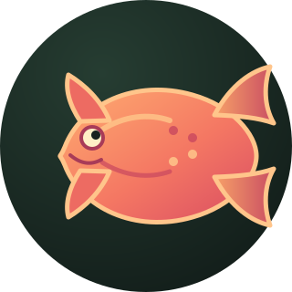

s4lm0n
Home
0 reportsAbout
/whoamiI am s4lm0n, a SOC Analyst based in Ho Chi Minh City.
I am currently developing hands-on experience in SOC environments, working with SIEM platforms, Windows security logs, network traffic, and detection engineering. I enjoy investigating suspicious activities, correlating events, and turning security findings into practical detection rules.
Beyond SOC operations, I am also interested in understanding how attacks work from an offensive perspective. I believe that learning both attack techniques and defensive detection helps build stronger security solutions.
Focus
SOC Operations · SIEM · Detection Engineering
Currently learning
Offensive Security · Threat Intelligence